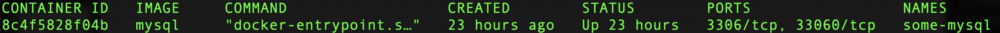

Install MySQL server with docker
Before we get started, it's important to note that Docker is a containerization platform that allows you to run software applications in isolated environments called containers. This means that you can interact with MySQL server without installing it from scrach and run multiple instances of the same application without any interference between them.
Now let's dive into the tutorial:
Step 1: Install Docker
If you don't have Docker installed on your system, you'll need to download and install it first. You can download Docker from the official website: https://www.docker.com/products/docker-desktop
Step 2: Pull the MySQL Docker image
In Docker, images are used to create containers, which are isolated environments that run applications. Images can be thought of as a template for containers, as they contain all the necessary files, libraries, and dependencies required for an application to run.
The docker pull command is used to download an image from a remote registry, such as Docker Hub. When you run this command, Docker will search for the specified image in the remote registry and download it to your local machine.
Once Docker is installed, open a terminal and run the following command to pull the MySQL Docker image:
This command will download the MySQL image to your local machine, which you can then use to create a container.It's important to note that you must have Docker installed on your local machine to use the docker pull command, as it is a Docker CLI command. Additionally, the image you're trying to pull must be available in the remote registry you're trying to access.
Step 3: Start a MySQL container
After you have pulled the MySQL Docker image, you can start a container using the following command:
This is the command used to start a new MySQL container with the following options :- --name mysql-container: This option is used to give a name to the new container. In this case, the container is named "mysql-container".
- -e MYSQL_ROOT_PASSWORD=my-secret-pw: This option sets an environment variable for the container, in this case, the MySQL - root password. This means that the password "my-secret-pw" will be used as the MySQL root password.
- -d: This option runs the container in detached mode, which means that it will run in the background and not attach to the terminal session. This is useful for long-running containers, such as database servers.
- mysql: This is the name of the Docker image that the container is based on. In this case, it is the official MySQL Docker image.
So when you run this command, Docker will start a new container based on the MySQL image with the name "mysql-container", set the MySQL root password to "my-secret-pw", and run the container in the background it just send you the id of the container like 8c4f5828f04b it means it started fine.
It's important to note that the MySQL root password should be changed to a more secure password before using the container in a production environment. Also, the name of the container and the password used can be changed to suit your specific needs.
This command will start a new container named "mysql-container" with the root password my-secret-pw
You can verify if the container is running with the command in your terminal :
You should see this in your terminal : Step 4: Access the MySQL container with the command line
To access the MySQL container, you can use the following command:
This command will start a MySQL shell session inside the container and prompt you to enter the password you set in the previous step.Step 5: Create a test database and a table
Now that you have access to the MySQL container, you can create a database and a table using the following commands:
CREATE DATABASE testdb;
USE testdb;
CREATE TABLE users (
id INT NOT NULL AUTO_INCREMENT,
name VARCHAR(50) NOT NULL,
email VARCHAR(50) NOT NULL,
PRIMARY KEY (id)
);
These commands will create a new database named "testdb" and a new table named "users" with three columns: "id", "name", and "email".
Step 6: Insert values into the table
You can insert values into the table using the following command:
This command will insert a new row into the "users" table with the name "John Doe" and the email "johndoe@example.com".Step 7: Test a query
Finally, you can test a query to retrieve the data you just inserted using the following command:
This command will retrieve all the data from the "users" table.
And that's it! You've successfully installed MySQL with Docker and created a table, inserted values, and executed a test query 🥳